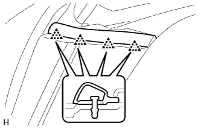

ПЕРЕДНИЙ БАМПЕР > СНЯТИЕ |
| 1. ОТСОЕДИНИТЕ ПРОВОД ОТ ОТРИЦАТЕЛЬНОГО ВЫВОДА АККУМУЛЯТОРНОЙ БАТАРЕИ (для моделей с газоразрядными фарами) |
| 2. СНИМИТЕ ВЕРХНЕЕ УПЛОТНЕНИЕ КРОНШТЕЙНА РАДИАТОРА |
Освободите 13 фиксаторов и снимите верхнее уплотнение кронштейна радиатора.
| 3. СНИМИТЕ ЛЕВОЕ БОКОВОЕ УПЛОТНЕНИЕ ПЕРЕДНЕГО БАМПЕРА |
|  |
Освободите 4 фиксатора и снимите боковое уплотнение переднего бампера.
| 4. СНИМИТЕ ПРАВОЕ БОКОВОЕ УПЛОТНЕНИЕ ПЕРЕДНЕГО БАМПЕРА |
| 5. СНИМИТЕ РЕШЕТКУ РАДИАТОРА |
 |
Наклейте защитную клейкую ленту вокруг решетки радиатора.
Освободите 2 фиксатора и выверните 2 болта.
Расцепите 8 захватов и снимите решетку радиатора.
| *1 | Защитная клейкая лента |
| 6. СНИМИТЕ НАКЛАДКУ ПЕРЕДНЕГО БАМПЕРА |
Наклейте защитную ленту вокруг накладки переднего бампера.
Выверните 2 болта A и 2 болта B.
Выверните 6 винтов и освободите 6 фиксаторов.

| *1 | Защитная клейкая лента | *2 | Болт A |
| *3 | Болт B | - | - |
Освободите 12 захватов.
Для моделей с сенсорной системой помощи при парковке TOYOTA и противотуманными фарами:
Отсоедините 3 разъема.
Для моделей с сенсорной системой помощи при парковке TOYOTA без противотуманных фар:
Отсоедините разъем.
Для моделей без сенсорной системы помощи при парковке TOYOTA и с противотуманными фарами:
Отсоедините 2 разъема.
Для моделей с системой очистителей фар:
Отсоедините шланг очистителя фар.
Снимите облицовку переднего бампера.

| *1 | Защитная клейкая лента | - | - |
| 7. СНИМИТЕ ПЕРЕДНИЙ ПОГЛОТИТЕЛЬ ЭНЕРГИИ УДАРА |
Снимите передний поглотитель энергии удара.
| 8. СНИМИТЕ НИЖНЮЮ НАКЛАДКУ ПЕРЕДНЕГО БАМПЕРА |
Снимите фиксатор, выверните 5 болтов и снимите нижнюю накладку переднего бампера.
| 9. СНИМИТЕ УСИЛИТЕЛЬ ПЕРЕДНЕГО БАМПЕРА В СБОРЕ |
Отверните 6 гаек и снимите усилитель переднего бампера.
| 10. СНИМИТЕ ЛЕВЫЙ УДЛИНИТЕЛЬ ПЕРЕДНЕГО БАМПЕРА № 2 В СБОРЕ |
Выверните 4 болта и снимите удлинитель переднего бампера № 2.
| 11. СНИМИТЕ ПРАВЫЙ УДЛИНИТЕЛЬ ПЕРЕДНЕГО БАМПЕРА № 2 В СБОРЕ |
| 12. СНИМИТЕ ЛЕВОЕ УСИЛЕНИЕ ПЕРЕДНЕГО БУФЕРНОГО БРУСА |
Выверните 2 винта и снимите усиление переднего буферного бруса.
| 13. СНИМИТЕ ПРАВОЕ УСИЛЕНИЕ ПЕРЕДНЕГО БУФЕРНОГО БРУСА |
| 14. СНИМИТЕ ЛЕВУЮ ФАРУ В СБОРЕ |
Для моделей с галогенными фарами:
Снимите фару (Нажмите здесь).
Для моделей с газоразрядными фарами:
Снимите фару (Нажмите здесь).
| 15. СНИМИТЕ ПРАВУЮ ФАРУ В СБОРЕ |
| 16. СНИМИТЕ ЛЕВУЮ БОКОВУЮ ОПОРУ ПЕРЕДНЕГО БАМПЕРА |
Выверните винт.
С помощью съемника фиксаторов освободите 2 захвата и снимите боковую опору переднего бампера.
| *1 | Защитная клейкая лента |
| 17. СНИМИТЕ ПРАВУЮ БОКОВУЮ ОПОРУ ПЕРЕДНЕГО БАМПЕРА |
| 18. СНИМИТЕ ВЕРХНИЙ ЦЕНТРАЛЬНЫЙ ДЕРЖАТЕЛЬ ПЕРЕДНЕГО БАМПЕРА |
Выверните 3 болта и снимите верхний центральный держатель переднего бампера.
| 19. СНИМИТЕ ЛЕВЫЙ КРОНШТЕЙН ПЕРЕДНЕГО БАМПЕРА В СБОРЕ |
Выверните 2 болта и снимите кронштейн переднего бампера.
| 20. СНИМИТЕ ПРАВЫЙ КРОНШТЕЙН ПЕРЕДНЕГО БАМПЕРА В СБОРЕ |